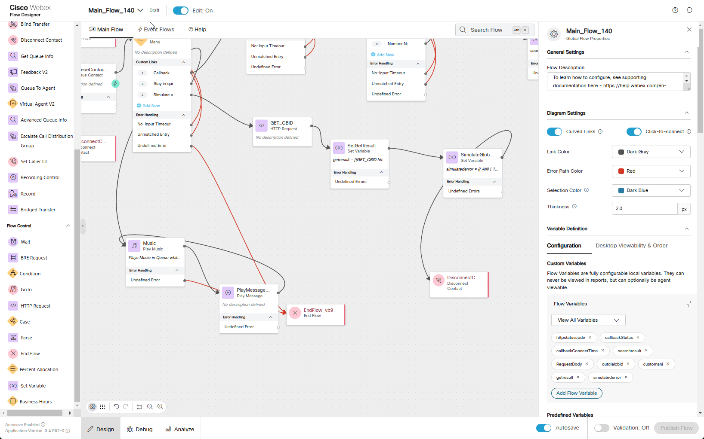

Mission 3: Callback on Global Error
Story
Imagine a caller is navigating an IVR menu when, suddenly, the call drops due to an unexpected error in the flow. This unplanned interruption leaves the customer disconnected without completing their request. In this scenario we are going to configure our flow to schedule a callback to the caller when such failure scenario occurs.
Call Flow Overview
- A new call enters the flow.
- The flow executes the logic by querying external database for Outbound Channel and ANI.
- The call is routed to the appropriate queue, but no agents are available.
- On a callback offering a new option should be selected to simulate an error and drop the call.
- Once an agent becomes available, the callback is initiated to the number.
Mission Details
Your mission is to:
- Simulate a global error scenario to trigger a Global Error Event and initiate a workflow to reconnect with a caller whose call was disconnected due to an undefined error.
- Configure an API POST request to schedule a callback when global error happens. You cannot rely on the Callback node in Main Flow because the call leg is no longer active after termination. Instead, you must design a custom solution to address this limitation.
- You do not need to configure Outdial Channel and Ourdial Queue as they have been preconfigured for you:
- Outdial_Your_Attendee_ID_Channel
- Outdial queue Outdial_Your_Attendee_ID_Queue to which your Your_Attendee_ID_Team has been assigned.
- Simulate a real API server. You will use MockAPI to retrieve the Outdial channel ID and the target callback number. The retrieved Outdial channel ID will then be used in the Callback API POST request.
Good to Know [Optional]
We are starting to use Webex Contact Center APIs in this mission. More information can be found in the Webex Contact Center for Developers portal.
For more information of how you can use MockAPI please watch these Vidcasts: [ADVANCED] Use MockAPI to enhance your Demos - PART 1 and [ADVANCED] Use MockAPI to enhance your Demos - PART 2
Build
Note
We are going to extend the same flow by adding additional functionality to simulate a global error scenario which will trigger a callback to a caller.
- Switch to the Flow Designer. Open your flow Main_Flow_Your_Attendee_ID and make sure Edit toggle is ON.
-
On the right-hand side, in the Global Flow Properties panel, scroll down to locate the Flow Variables section under Custom Variables. Click the Add Flow Variable button and add the following 4 flow variables:
- Outdial Entry Point Variable :
Name: outdialcbid
Type: String
Default Value: empty
- Custom ANI variable:
Name: customani
Type: String
Default Value: empty
- HTTP GET Result variable:
Name: getresult
Type: String
Default Value: empty
- Simulated Error variable:
Name: simulatederror
Type: String
Default Value: empty
-
Click on WantCallback node
Add Option 3. Name it as Simulate an error
Text-to-Speech Message: All agents are busy. Please press 1 if you want to schedule a callback. Press 2 if you want to wait in queue. Press 3 to simulate global error.. We are extending the existing message by adding Option 3.
-
Add an HTTP Request node for our query. We are going to fetch Outbound Channel/Entry Point ID and custom ANI. Remember we used the same Cisco Worldwide Support contact number in Mission 3 of Fundamental labs.
Connect WantCallback Option 3 to this HTTP node
We will connct HTTP Request node in next step
Activity Name: GET_CBID
Use Authenticated Endpoint: Off
Requestt URL: https://674481b1b4e2e04abea27c6e.mockapi.io/flowdesigner/Lab/DynVars?dn={{NewPhoneContact.DNIS | slice(2) }}
Method: GET
Content Type: Application/JSON
Parsing Settings:
Content Type: JSON
Output Variable: outdialcbid
Path Expression: $[0].outboundcallbackep
Click Add New
Output Variable: customani
Path Expression: $[0].tacnumber
Test your API Source[Optional]-
Test your API resource. https://674481b1b4e2e04abea27c6e.mockapi.io/flowdesigner/Lab/DynVars?dn={DNIS}
-
Replace {DNIS} with the provided DNIS number stripping +1
[Example:] If your number +14694096861, then your GET Query should be https://674481b1b4e2e04abea27c6e.mockapi.io/flowdesigner/Lab/DynVars?dn=4694096861
- Open Chrome browser and past your URL. You should get the follwoing result
-
Test JSON Path in the following tool https://jsonpath.com/
-
Paste your GET URL into the Browser address line and copy the output in square brackets (including brackets)
-
Open https://jsonpath.com/ and paste the copied response into Inputs window
-
In JSONPath box copy and paste one of the path expression from FetchFlowSettings to verify your results.

-
-
Add Set Variable node
Activity Label: SetGetResult
Connect GET_CBID to this node
We will connct Set Variable node in next step
Variable: getresult
Set To Variable: GET_CBID.httpResponseBody
-
Add one more Set Variable and Disconnect Contact nodes. We are going to intentionally configure an incorrect value in the Set Variable node to forcibly trigger a Global Error.
Activity Label: SimulateGlobalError
Connect SetGetResult to this node
Connect this node to Disconnect Contact
Variable: simulatederror
Set Value: {{ ANI | 123}}
-
Navigate to Event Flows and delete connection from OnGlobalError to EndFlow.
-
Add HTTP Request node to the flow. In this step we are going to build a Create Task API POST request. See Create Task API for details.
Activity Label: CallBackAPI_HTTPRequest
Connect the OnGlobalError output edge node to this node
Use Authentication Endpoint: On
Connector: WxCC_API
Request Path: /v1/tasks
Method: POST
Content Type: Application/JSON
Request Body:
{ "entryPointId": "{{outdialcbid}}", "destination": "{{customani}}", "attributes": {"Message":"tester","To Queue":"sales"}, "outboundType": "CALLBACK", "mediaType": "telephony", "callback": { "callbackOrigin": "web", "callbackType": "immediate" } } -
Add Condition node. In this node we are going to check the status of our API POST request. If HTTP response is 201 Created the output will be True and if other than 201 then False.
Activity Label: HTTPStatusCode
Connect the output node edge from the CallBackAPI_HTTPRequest node to this node
Connect both True and False exists to EndFlow node. We will be able to see in Debug tool whether request was succsesful or not.
In the Expression section write an expresion {{CallBackAPI_HTTPRequest.httpStatusCode == 201}}
-
Validate the flow by clicking Validate, Publish and select the Latest version of the flow.
-
Switch to Control Hub. Navigate to Channels under Customer Experience Section, locate your channel Your_Attendee_ID_Channel.
- Click on Your_Attendee_ID_Channel
-
In Entry Point settings section change the following, then click Save button:
Routing Flow: Main_Flow_Your_Attendee_ID
Version Label: Latest
{kind=link}
{kind=link}
{kind=link}
{kind=link}
{kind=link}
{kind=link}
{kind=link}
{kind=link}
Testing
- Make sure you're logged into Webex CC Desktop application as Agent and set status to Not Available. In this case call will not be assigned to an agent and callback will be proposed to a caller.
-
Make a call to the Support Number and if success you should hear configured messages.
-
Next message will propose you options to request callback, stay in queue or simulate an error. Press 3 on Webex App DialPad to simulate an error.
-
If everything configured correctly your call should be disconnected.
-
Open Debug tool in your Main_Flow_Your_Attendee_ID and click on first call in the list which should be the last call you made. Look for WantCallback in Activity Name column and make sure the call left WantCallback out of Option 3 and continue through GET_CBID.
-
Click on either GET_CBID node of the flow or on Activity Name GET_CBID n the Debug tool and scroll to the bottom the right hand side section of Debug tool. Under Modified Variables you should see values assigned to outdialcbid and customani flow variables. Where outdialcbid is ID of your Outdial_Your_Attendee_ID_Channel and customani is a well known Cisco Worldwide Support contact number 1 408 526 7209. The same number we used in previous exercise. This time we used an external database as well as GET API call to extract that number.
-
While still on Debug tool, click on SetGetResult to see full response from HTTP request that we wrote into getresult flow variable.
-
Make sure SimulateGlobalError activity name has an Error next to it in Outcome column. That mean you succesfully simulated Global Error event.
-
Click on next activity name GlobalErrorHandling which goes after SimulateGlobalError activity name. Flow Designer automaticaly will open Event Flows tab.
-
Observe Condition node to make sure exit went out via True exit. This tells you that HTTP response is 201 Created and callback has been scheduled succesfully.
-
On Webex Desktop, make your agent Available. Contact Center will reserve your agent right away and propose to answer a callback call.
Congratulations on completing another mission.